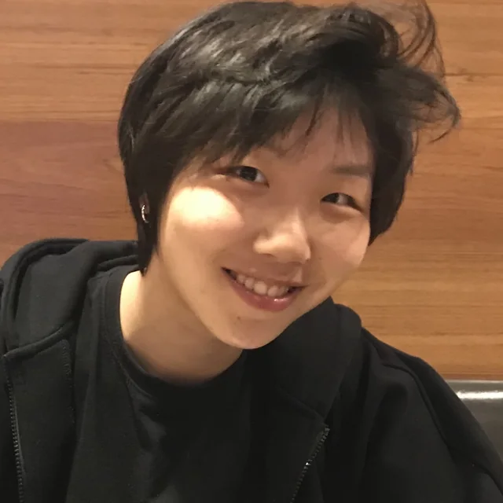
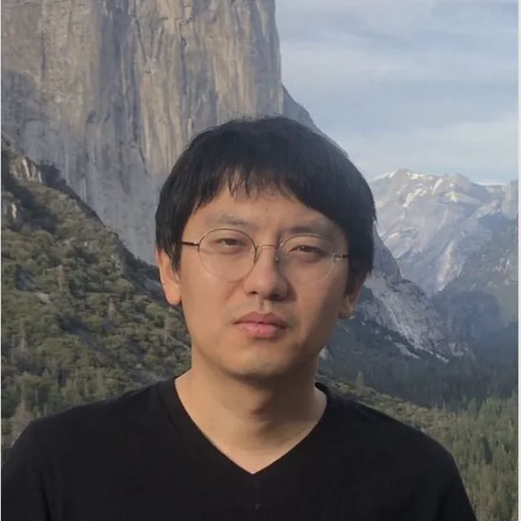

Jiakai Tang
Renmin University of China
Ph.D. candidate focused on LLM-based recommender systems, with research across recommendation, retrieval, and e-commerce AI.
Organizers from academia and industry working across recommender systems, information retrieval, agents, simulation, and e-commerce AI.
Renmin University of China
Ph.D. candidate focused on LLM-based recommender systems, with research across recommendation, retrieval, and e-commerce AI.
Leiden University
Ph.D. candidate researching LLM-based recommendation, generative retrieval, and agentic approaches to personalized information access.

National University of Singapore
Ph.D. candidate working on recommender systems, LLM agents, and the intersection of language models with recommendation.
Alibaba Group
Algorithm expert focused on large-scale recommender systems, generative recommendation, and LLM-powered agents for e-commerce.
Kuaishou Technology
Applied scientist researching recommender systems, reinforcement learning, generative methods, and AI for science.

Leiden University
Associate Professor working at the intersection of information retrieval and NLP, including conversational search and recommendation.
Renmin University of China
Tenured Associate Professor researching recommendation, reinforcement learning, causal inference, LLM agents, and social simulation.
University of Chinese Academy of Sciences
Associate Professor whose research spans recommender systems, natural language processing, and safety-oriented AI.
University of Amsterdam
Distinguished University Professor of AI and Information Retrieval, ACM Fellow, and Scientific Director of the Innovation Center for AI.